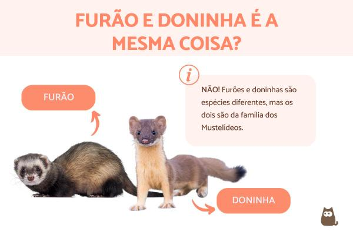

Esse é meu site sobre a diferença de doninha e furão

Aqui temos algumas curiosidades
Sobre o furão:
O furão é um mamífero quadrúpede e carnívoro
pertencente à família dos Mustelídeos
Sobre a doninha:
A doninha é um predador diurno
especialista em pequenos mamíferos